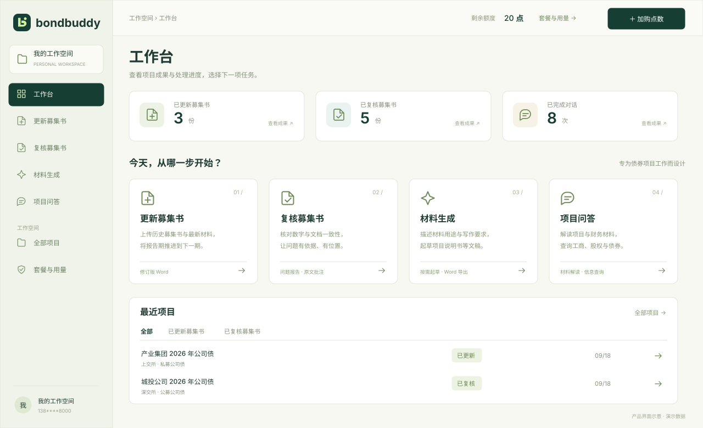
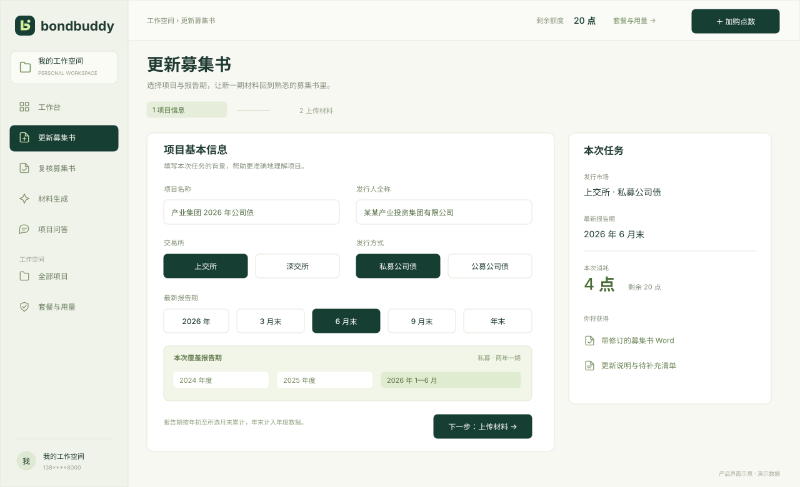
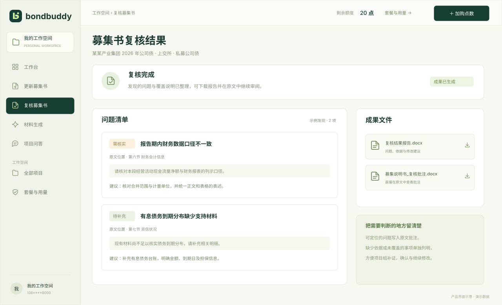
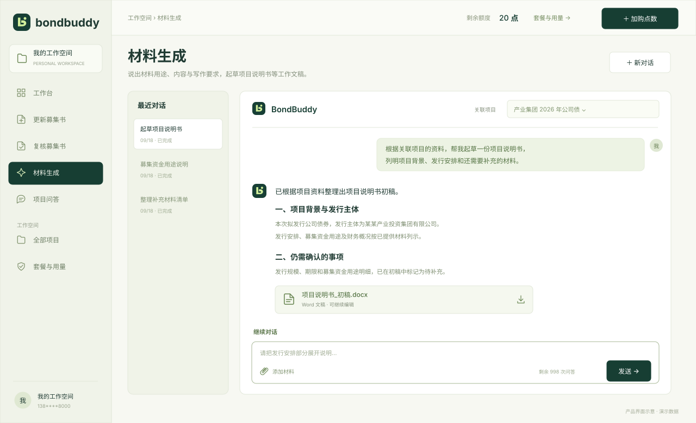
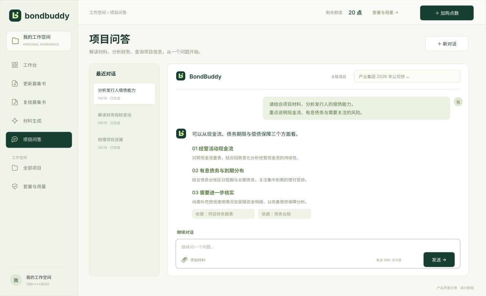

让更新，接着原稿往下走
以历史募集书为底稿，结合新一期材料更新内容。修订痕迹保留在 Word 中，项目组可以继续审阅与修改。
减少逐段查找与来回搬运从募集书更新、复核到材料起草与问答，
让每一份材料，向下一步交付靠近。
Windows 桌面版即将上线，现可体验网页版
 BondBuddy债券项目工作台
BondBuddy债券项目工作台
专注公司债，贴近你的业务
项目材料不断增加，报告期不断推进。
BondBuddy 帮你处理重复工作，让精力回到项目本身。
以历史募集书为底稿，结合新一期材料更新内容。修订痕迹保留在 Word 中，项目组可以继续审阅与修改。
减少逐段查找与来回搬运对照募集书、财务报表与支持材料，梳理数字勾稽、文内及跨文档一致性问题，列明依据和待核实事项。
把注意力放在需要判断的地方修订版、批注版、问题报告和起草文稿，都可以下载为 Word。用你熟悉的文档，继续推进项目。
从材料处理，走到可审阅的交付选择一个任务，看看 BondBuddy 怎么帮你。
上传历史募集书和最新材料，将报告期推进到下一期，保留每一处可核对的修改。

从文内表述到跨文档数字核对，让发现的问题有出处，也方便回到原文逐项处理。

从项目说明书到募集资金用途说明，用对话补充背景、明确要求，完成日常材料的第一稿。

解读财务、梳理债务、理解项目材料。专业版还可结合外部查询，补充工商与债券相关信息。

沿用熟悉的项目资料，
把处理过程交给 BondBuddy。
更新、复核、起草或提问。填写项目背景，按需选择交易所、发行方式与报告期。
历史募集书、财务报表、附注、审计报告……按类型上传，复核时的支持材料可选。
查看处理结果与待补充事项，下载修订稿、批注稿或报告，继续项目组的审阅工作。
两档均支持募集书更新、复核、材料起草与分析。
专业版提供更多用量，并增加外部数据查询。
依据已有材料，完成日常项目工作。
可更新 1 份，或复核 4 份，也可组合使用
基于已有项目与上传文件解读、分析、起草。
不含工商、债券等外部数据库查询。
材料处理与外部信息核验，一起推进。
可更新 3 份，或复核 12 份，也可组合使用
查询工商、股权、风险，以及全部公司债的兑付与存续情况（含已到期和未到期）。
两项任务共用点数；更新、复核时上传的材料已包含在任务点数内。
当前支付为演示流程，不会实际扣款。外部数据查询按专业版权益提供，实际可用范围以已授权接入的服务为准。
关于版本、材料和额度，
这里说清楚。
Windows 桌面版正在准备中，当前可以使用 BondBuddy 网页版体验工作台与任务流程。安装包发布后，会在本页提供下载入口。
当前聚焦上交所、深交所的私募公司债与公募公司债。最新报告期可选 3 月末、6 月末、9 月末或年末，系统展示私募两年一期、公募三年一期的连续报告期；年末计入年度数据。
可以。复核只需必传一份待复核募集书 DOCX，财务报表、附注、审计报告、历史募集书等支持材料可选。支持材料越充分，交叉核验范围越完整；缺少依据的事项会注明，便于后续补充。
更新一份募集书使用 4 点，复核一份使用 1 点；两项任务的上传材料包含在点数内。对话每完成一轮回答计 1 次，每次新上传 1 个文件计 1 份，引用已有项目材料不重复计份数。任务未成功，预占的点数会退回。
更新任务交付带修订的募集书 Word 与更新说明；复核交付问题报告与原文批注版 Word；材料生成支持下载文稿。结果同时列明待补充和未覆盖的事项，方便项目组继续审阅与完善。